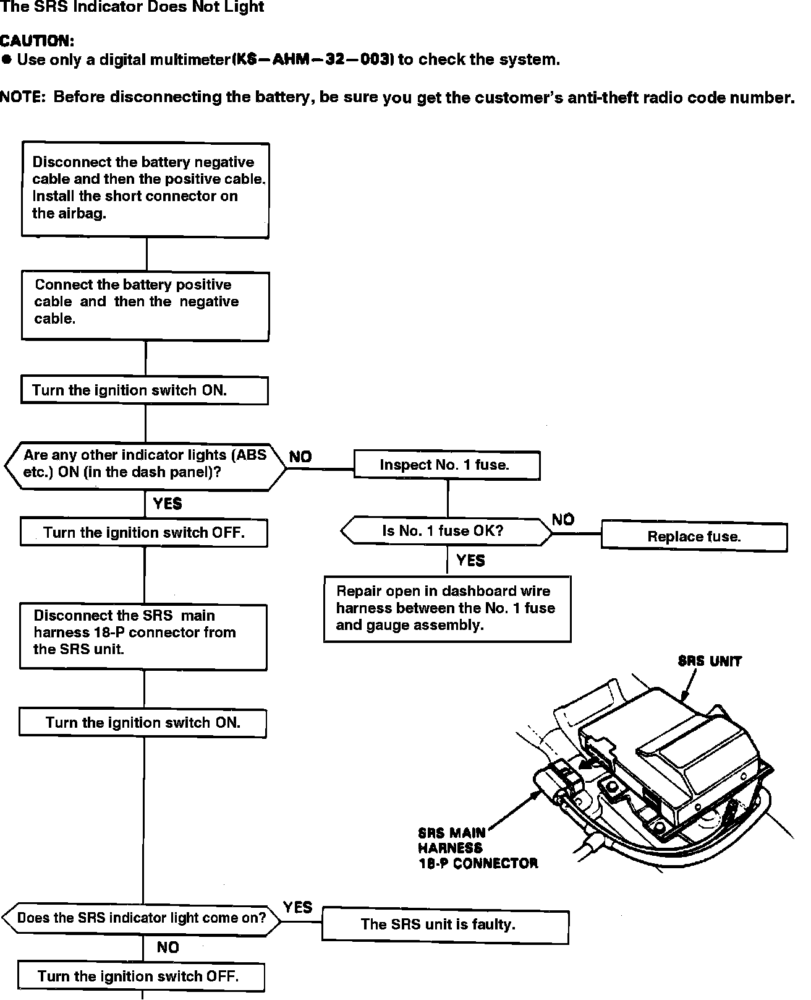
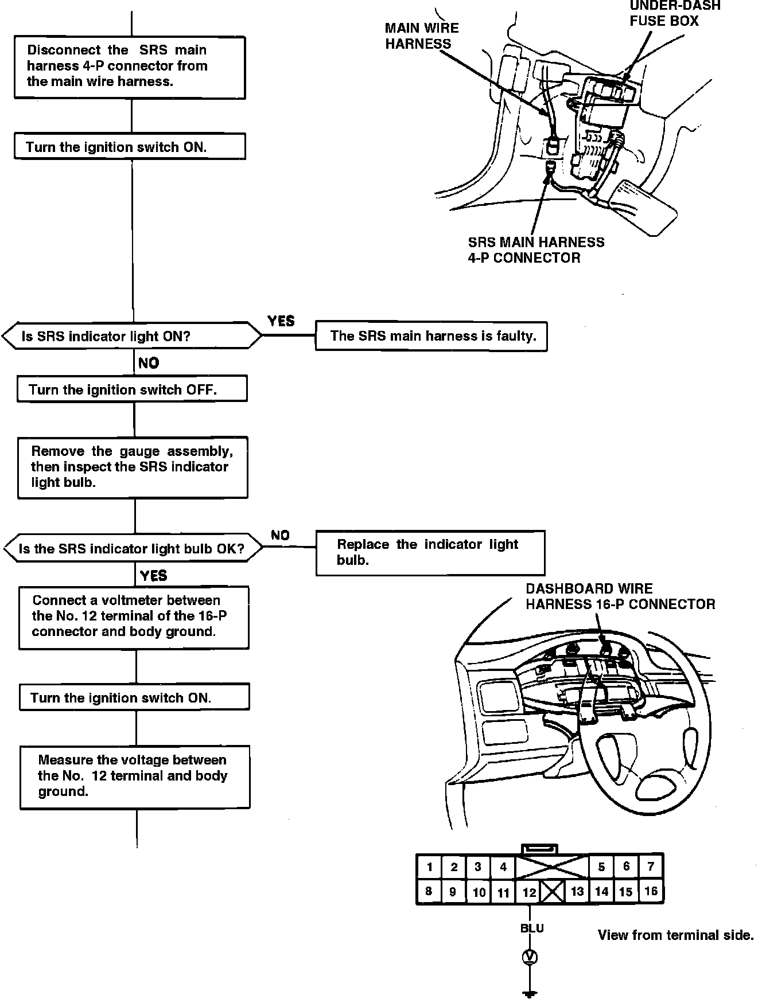
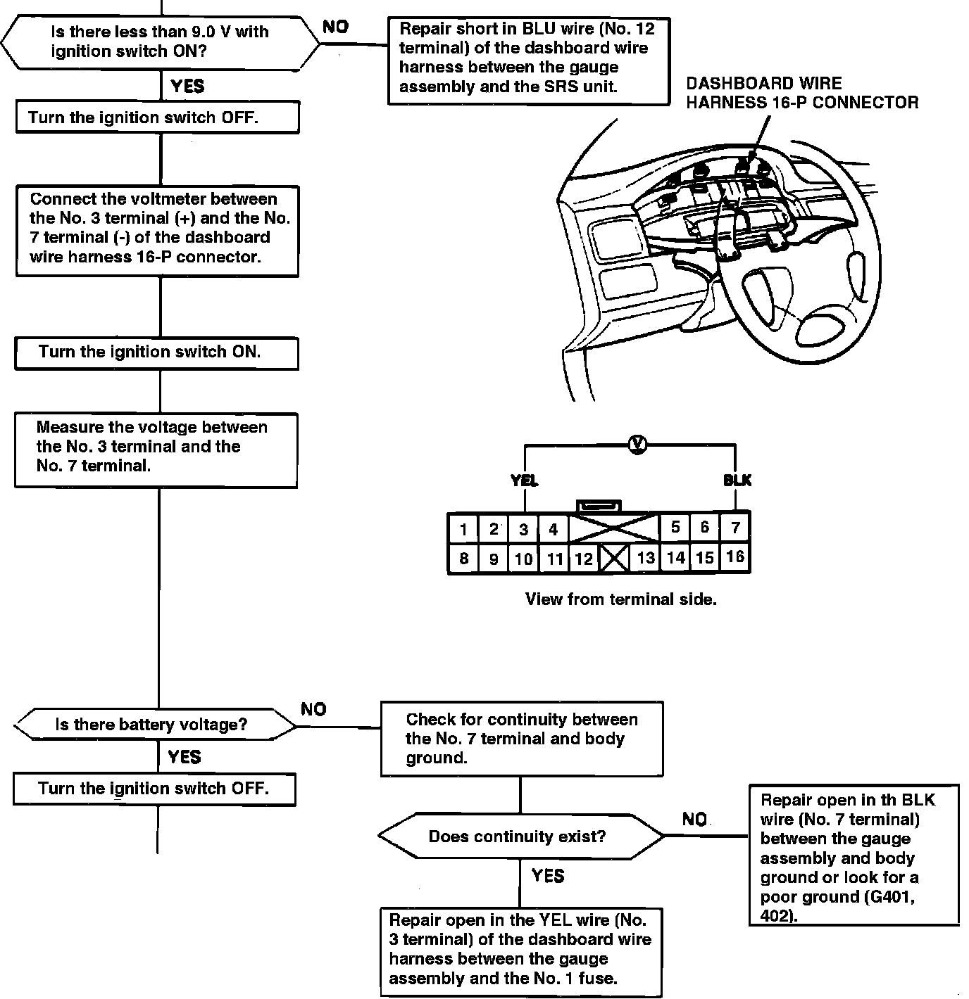
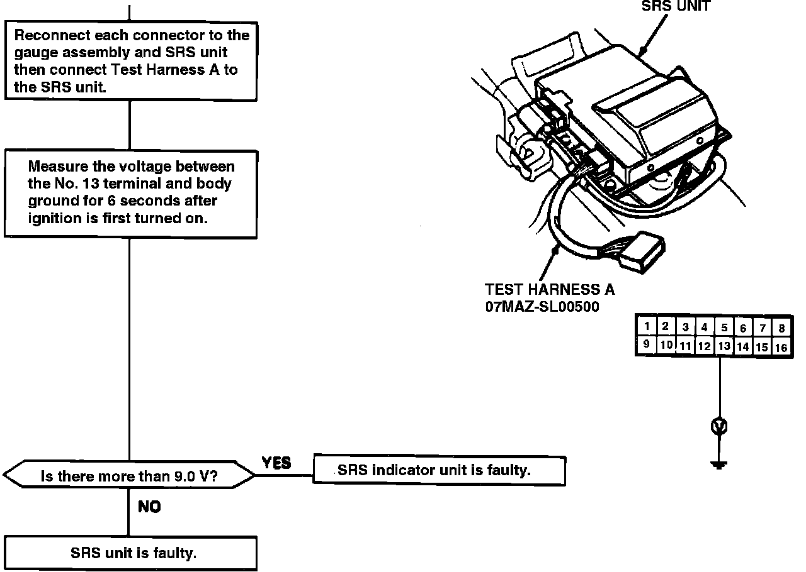

SRS Indicator Light Doesn't Come On
Fig. 18 Troubleshooting Chart, SRS Indicator Does Not Light (Part 1 Of 4):

Fig. 18 Troubleshooting Chart, SRS Indicator Does Not Light (Part 2 Of 4):

Fig. 18 Troubleshooting Chart, SRS Indicator Does Not Light (Part 3 Of 4):

Fig. 18 Troubleshooting Chart, SRS Indicator Does Not Light (Part 4 Of 4):

Refer to Air Bags and Seat Belts/Air Bags (Supplemental Restraint Systems)/Locations/Connectors for component and connector locations and SCHEMATIC DIAGRAMS/ELECTRICAL AND ELECTRONIC DIAGRAMS/TEST HARNESS CONNECTORS for test harness attachments.